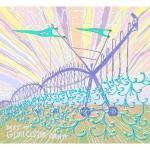
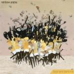
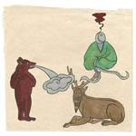

Music Reviews
-

Danielson The Best of Gloucester County
Did I learn to acquire this notoriously acquired taste?
Alan Shulman reviews... -
R.E.M. Collapse into Now
Who says the same old thing has to be a bad thing?
Chris Coplan reviews... -
Beth Ditto EP
Gossip's front woman heads for the dancefloor with her debut EP of winsome electro house.
Gary McGinley reviews... -
The Tellers Close The Evil Eye
Brandishing an assortment of love-stricken anthems, this Belgium group continues to grow out of their ingenuous guitar pop.
Juan Edgardo Rodríguez always enjoys a good pop song... -
.jpg)
Jessie J Who You Are
UK star's debut shows promise but isn't easy to love.
Gary McGinley reviews... -

Rainbow Arabia Boys and Diamonds
The LA-based husband and wife duo may have had one of the most nerdy reasons to form a band, but luckily the music they offer is big, brash and exciting.
Mark Davison reviews... -
Marry Waterson and Oliver Knight The Days That Shaped Me
Classic folk with some modern twists.
Andrew Davison reviews... -
.jpg)
The Sunshine Factory Sugar
Andrew Baer finds The Sunshine Factory's brand of shoegaze a little too derivative.
Click here to read more... -

Six Organs of Admittance Asleep on the Floodplain
Ben Chasny’s work as Six Organs of Admittance spans over ten years and probably as many LPs. Logic, when applied to music, would normally declare this: He should suck by now.
Sean Caldwell reviews... -

Radiohead The King Of Limbs
Radiohead have a new album out; you might have heard about it. It was mentioned on the internet recently.
Joe Rivers pre-ordered on the Monday, just like the rest of you...